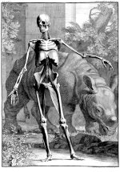

Bernard Siegfried Albinus, Tabulae sceleti et musculorum corporis humani. Lugduni Batavorum, prostant apud Ioannem et Henricum Verbeek, 1747. -- (Plano 54 D 1)
Albinus’ grootse anatomische atlas bestaat uit twee delen: het eerste bevat drie platen van het skelet, het tweede negen van de spieren. In het vorige nummer is verteld hoe de platen tot stand zijn gekomen, maar er is daar geen aandacht geschonken aan de vaak wonderlijke achtergronden op de platen. Ligt de combinatie skelet-engel nog tamelijk voor de hand, die van spieren en een neushoorn is heel wat minder eenvoudig. Bij een nadere beschouwing van de platen blijkt echter, dat ze alle van fraaie uitbeeldingen van de natuur in haar rijkste verschijningsvorm zijn voorzien. Dit sluit goed aan bij Albinus’ levensfilosofie: een grenzeloze bewondering voor de krachten van en in de natuur. In de platen vinden we zodoende de tegenstelling tussen dood en leven aangegeven, soms nog met een extra symbolische aanduiding.
Zo verbeeldt hier de neushoorn in de al uit de Oudheid stammende leer van de vier temperamenten, die het leven beheersen, het melancholische. (De overige drie zijn het sanguinische, flegmatische en cholerische.) Het bijzondere aan deze afbeelding van een neushoorn is, dat het een van de eerste is ‘ad vivum’ (naar het levend model), want pas in 1741 arriveerde er een levend exemplaar in Europa. Wandelaar kon het dier in Amsterdam goed bekijken, en het resultaat daarvan was een afbeelding die sterk afweek van het beeld van de neushoorn zoals Albrecht Dürer dat in 1515 voor ruim twee eeuwen had bepaald.
Literatuur
- H. Punt, Bernard Siegfried Albinus (1697-1770): on ‘human nature’. Anatomical and physiological ideas in eighteenth-century Leiden. Amsterdam 1983, p. 53, 68.
| vorige pagina | top pagina |